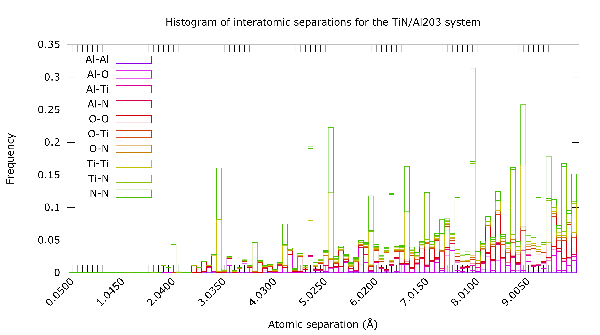

MEAMfit2 is a code developed as an extension of MEAMfit version 1.02. MEAMfit2 can be compiled relatively easily using the included files and the latest intel compiler
Running MEAMfit2 for the first time in a directory containing a number of vasprun.xml files, MEAMfit2 will generate a file called fitdbse. In the case that there are more than ~1000 vasprun.xml files, you will have to edit the fitdbse file's first few characters to include the number of vasprun files that you want MEAMfit2 to consider. Unlike the original MEAMfit program however, MEAMfit2 will automatically populate this with the number of files that you have in the case that there are less than ~1000.
In the case that you are trying to model a system that has directional bonding (like in covalent materials), you will want to create a MEAM file instead of an EAM file. This option can be selected when running MEAMfit2 for the second time which will create a file called settings. You will need to edit the settings file to 1) uncomment (by removing the # sign) the CUTOFF_MAX= line and add a suitable CUTOFF_MAX value. You can determine a suitable CUTOFF_MAX value from the histogram of interatomic seperations that MEAMfit2 will generate for you if you run the program with the noopt (no-optimization) option. You will also need to add the string STOPTIME=24 (or some other relatively large amount of time where the number following STOPTIME is hours).
For the reader's reference, I am including here some notes on this histogram of interatomic separations that MEAMfit2 will generate. The file will be of plain text data in columns, the first being a distance unit and the second to the last being interactions. These interactions are split into series based on type. For example, if you had 2 species (A, and B) then there would be three columns following the first being the interaction of A with A, then the interaction of A with B, and finally the interaction of B with B. For the case of this tutorial, I ran calculations for Al, O, Ti, and N so my histogram of interatomic separations had 11 columns
I have included below a plot of interatomic separations in the systems that I calculated for Al, O, Ti, and N. The specific frequency of occurrence is slightly misleading because there are in some cases more interactions of some species with others just based on the configurations that I calculated. All that you need to consider is that each of the bins represents an order of nearest neighbor interactions in your system. What you need to decide is where there is a good cutoff point of diminishing returns for distance that you are calculating vs. accuracy you care about.
Generating a historgram like this with Gnuplot turns out to be a bit of a trick because it, by default, will want to make a huge number of labels on the x-axis. I am including the code to reproduce a similar plot (you will need to supply the interatomic separations file from MEAMfit2) with Gnuplot to save you some hassle.
If you are finding that your program is quitting earlier than you might expect, examine the logs. If you find that there is an issue saying something like '...there is no interatomic separation information for species 2 and 4' then you might have neglected to include vasprun.xml files for the interactions of some of the species in your range of elements that you are including. For example, if you are trying to make a MEAM file for Al, O, Ti, and N, you need interaction information for all of the possible first order interactions e.g., Al-Al, Al-O, Al-Ti, Al-N, O-O, O-Ti, O-N, Ti-Ti, Ti-N, N-N. This means that you should include calculations for things like molecules as well as crystals.